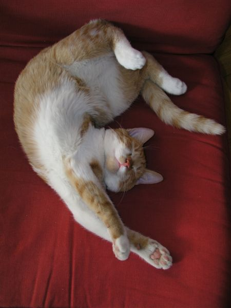

Le ronronnement du chat : que signifie-t-il vraiment ? |
|

|
Pourquoi les chats ronronnent-ils ? Ce bruit si apaisant est-il toujours un signe de contentement ? Alors qu'on ne cesse, à juste titre, de vanter les bienfaits de la ronronthérapie, il est bon de rappeler d'où provient le ronronnement du chat, et sa signification. Expression de bien-être, oui, mais pas toujours ! Comme nous l'explique Marie-Hélène Bonnet, comportementaliste du chat, les félins ne ronronnent en effet pas seulement lorsqu'ils sont bien dans leurs pattounes : Pour en savoir plus cliquez ici . |
Bibliographie
Le ronronnement selon Wikipédia |
|
|

|
Le ronronnement est une vocalisation émise par certains félins et viverridés. Produit à l’expiration comme à l’inspiration, ce son de basse fréquence apparaît dès l’âge de deux jours. Le mécanisme du ronronnement est encore mal expliqué. La théorie dominante est que le son est produit par des contractions des muscles du larynx déclenchées par une oscillation neurale et faisant vibrer les cordes vocales. La possibilité pour un félin de ronronner ou non est également un point débattu, notamment pour les grands félins de la sous-famille des Panthérinés. Pour en savoir plus cliquez ici . |
Les 10 comportements du chat expliqués aux humains |
|

|
Les attitudes félines peuvent se révéler extrêmement complexes pour leurs maîtres. Pour une entente et une compréhension optimales, 30millionsdamis.fr décrypte 10 attitudes qui en disent long sur le caractère du chat. Pour en savoir plus cliquez ici . |
Le Royaume des chats |
|

|
Le Royaume des chats (猫の恩返し, Neko no ongaeshi?, littéralement « La gratitude du chat ») est un film d'animation japonais du studio Ghibli réalisé par Hiroyuki Morita, sorti en 2002 au Japon. Il est adapté de Baron, neko no danshaku (バロン 猫の男爵, Baron: neko no danshaku?, littéralement « Baron, le chat baron ») de Aoi Hiiragi. Certains personnages de Si tu tends l'oreille (film des studios Ghibli également adapté d'un manga de Aoi Hiiragi) tels que Baron et Muta y apparaissent avec des rôles importants. Pour en savoir plus cliquez ici . |